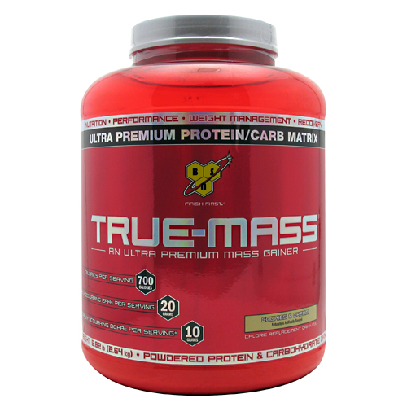

Información de True Mass :
True Mass es un ganador de masa magra ultra-premium, diseñado para promover el
crecimiento muscular. Cuenta con fórmula de proteína firma ultra-premium de BSN para alimentar a
los músculos de un atleta con bloques de construcción esenciales de proteínas. La mezcla única de
carbohidratos proporciona la apoyo calórica necesaria por el esfuerzo físico extremo, ayudando al cuerpo
a prepararse para la recuperación y el apoyo de un entrenamiento intenso. Fuente de grasas saludables
de combustible rápida quema de satisfacer las demandas de energía del atleta serio. Y todos estos ingredientes
de alta calidad se entrega con tecnología BSN exclusiva, la producción de uno de los la mayoría
de los batidos de ganadores de masa, que agua la boca en el mercado.
La composición equilibrada de True Mass hace que sea una fuente nutritiva de apoyo de calorías y útil como
sustitutivo de una comida saludable, como parte de un plan de dieta equilibrada. Su mezcla de ultra-premium
de proteínas, carbohidratos y grasas saludables promueve incrementos en la masa muscular magra. Y con un
sabor que no puede ser igualada, cuando se trata de ganadores de masa, True Mass está en una clase por sí mismo.


{kind=link}